On-site shadowing
We observed staff in active facilities to understand movement, handoffs, and interruptions.
Case study
A product redesign for warehouse teams who work through interruptions, movement, and physical constraints instead of tidy screen-by-screen flows.
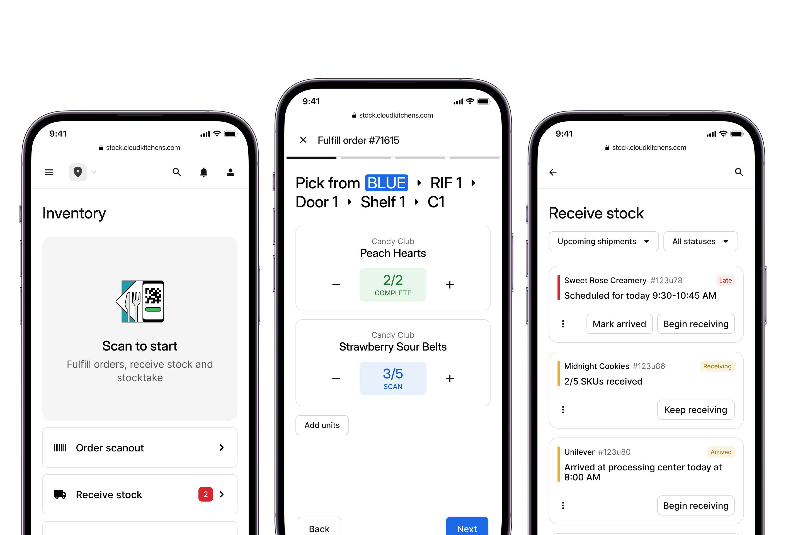
The problem
We were seeing consistently high order defect rates, with controllable ODR staying above 4%, negatively impacting customers, merchants, and overall business performance.
Through our analysis, we found a strong correlation between ODR and low inventory accuracy, making it a key driver of defects and a primary lever for reducing ODR.
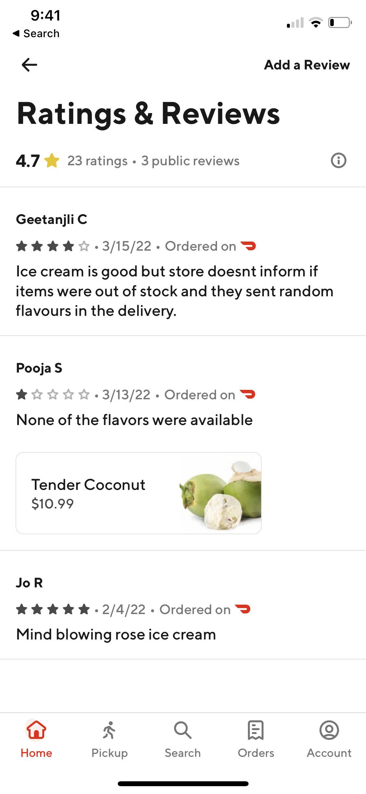
Research methods
We studied active facilities through shadowing, live usability sessions, and hands-on observation so the redesign reflected interruptions, movement, and physical constraints.
We observed staff in active facilities to understand movement, handoffs, and interruptions.
We tested with real devices in the warehouse to see where flows broke in context.
We mapped where physical context was lost and where recovery broke down.
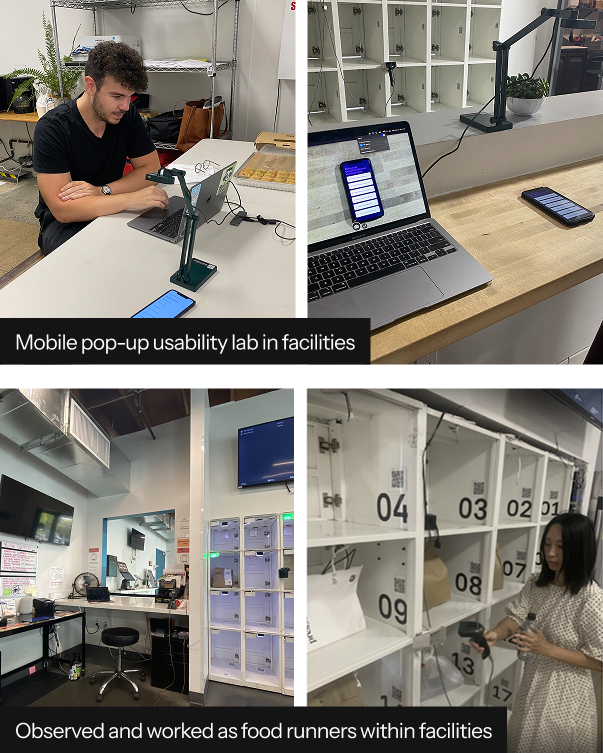
Research findings
Across sites, the same themes repeated: people worked by location, the system forced manual translation, and interruptions made it easy for context to disappear, but the system did not support how work actually happened on the floor.
01
Users had too much freedom in critical tasks, which made it easy to skip steps or improvise around guardrails.
02
Staff had to translate between the warehouse and the interface manually because digital tasks were not anchored to real locations.
03
Flows assumed uninterrupted, linear work even though tasks were fragmented and staff regularly switched context midstream.
Cross-team collaboration
To close the gap, we introduced a color-coded space tracking system with QR-coded racks. That created a direct mapping between the physical environment and the digital system, so work could stay grounded in where actions were actually happening.
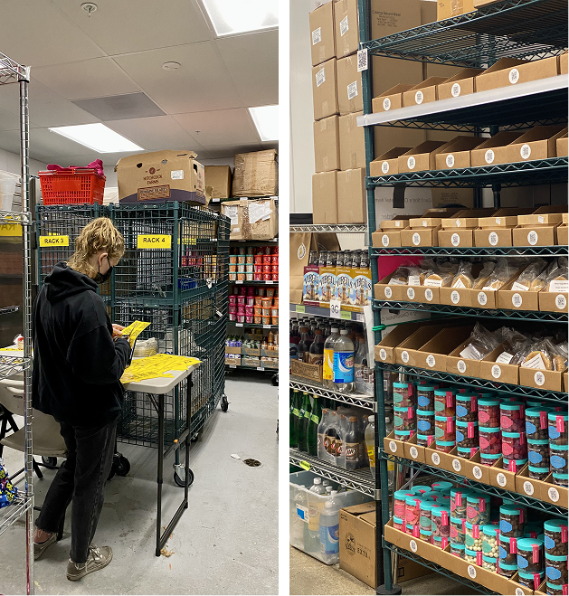
Stocktake
Staff counted by location using the color-coded system instead of navigating long SKU lists.
Move-inventory and waste flows were built directly into counting so supporting work no longer broke the flow.


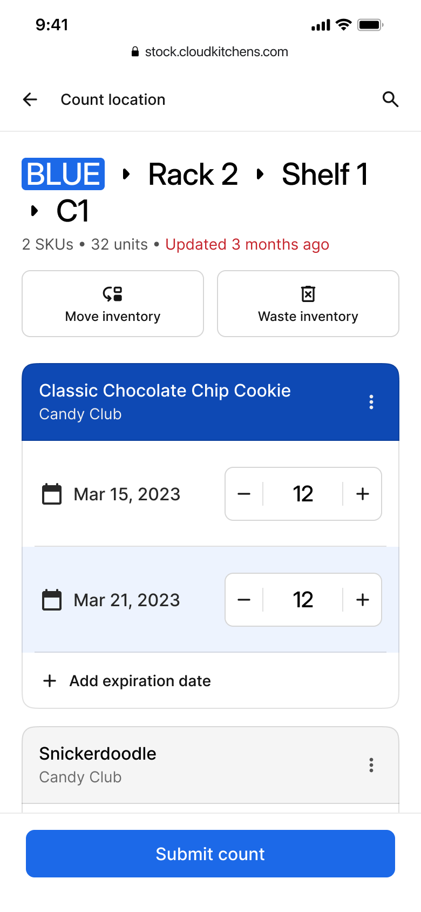
Design solution
Granular statuses let staff mark items as arrived, save progress, and resume later.
QR-coded racks turned receiving into a linear sequence tied to the physical environment.
Expiration details were entered when stock arrived, not retroactively after memory faded.
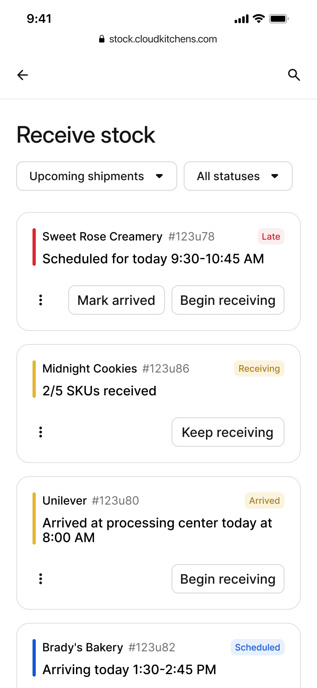
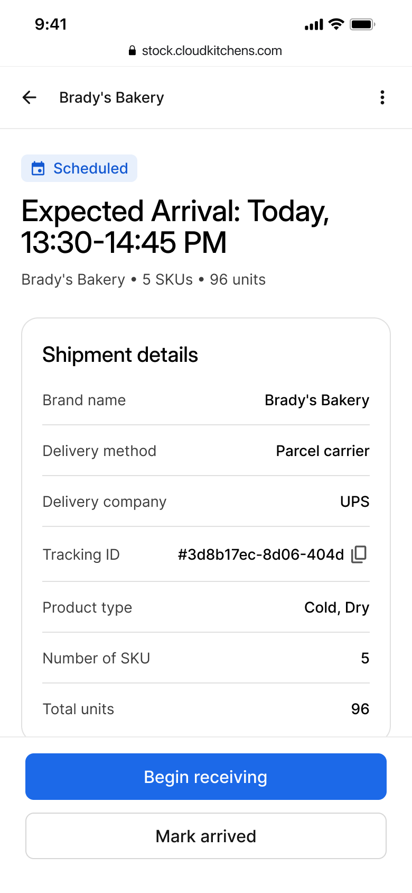
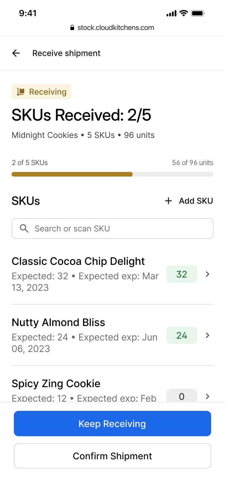
Scan-first fulfillment
Users were guided through the correct shelf, rack, and item order before confirming quantities.
Missing or substituted items required a reason so stock updates stayed honest in imperfect scenarios.
Inventory counts were updated at the exact moment the exception happened, not after the run.
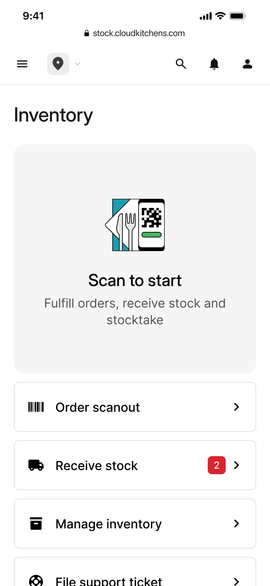
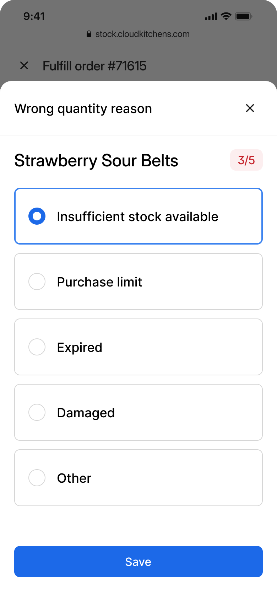
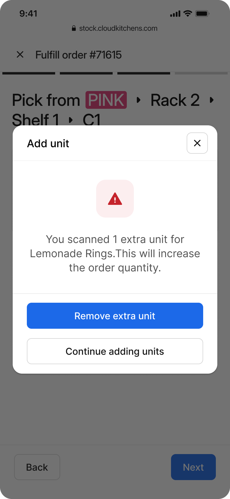
Daily inventory management
The system generated location-based work automatically, removing setup overhead from the team.
Users simply worked through assigned tasks instead of manually assembling a stocktake session.
Progress was saved so the team could resume without losing state or creating inconsistency.
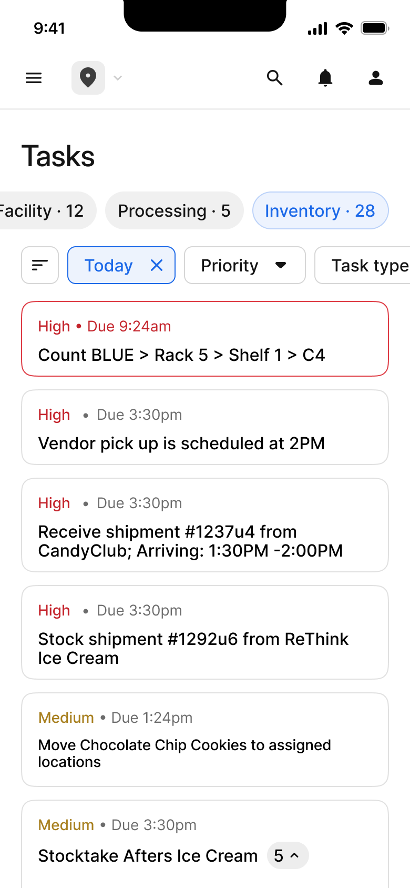
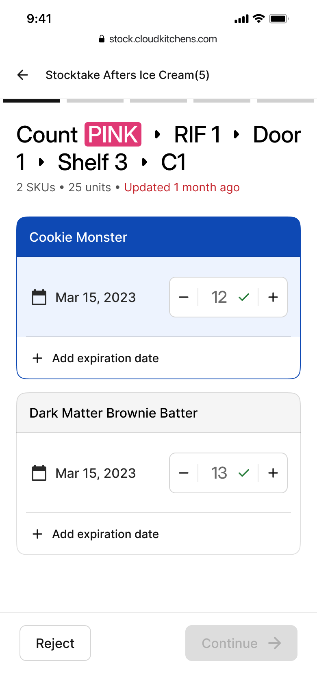
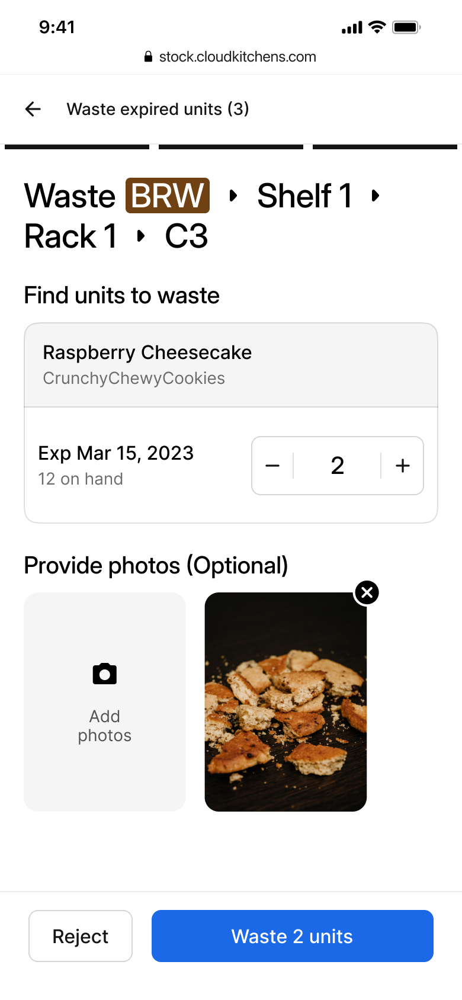
Outcome
The redesign enabled consistent, location-driven workflows across facilities, reducing reliance on individual memory and minimizing picking errors.
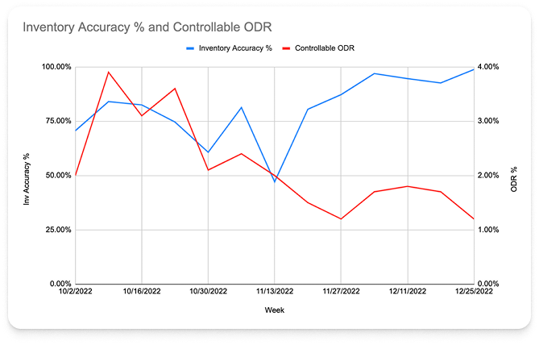